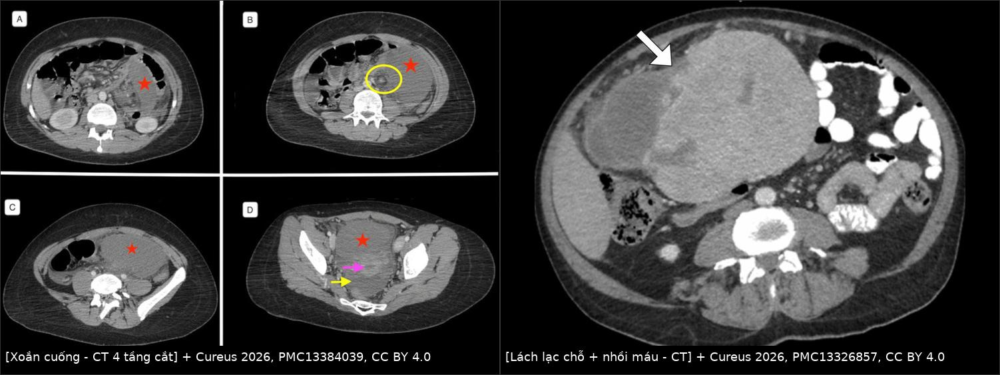
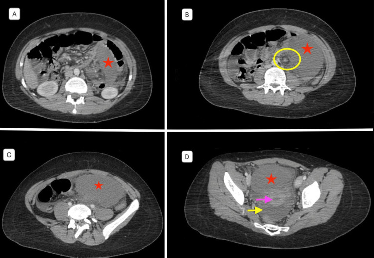
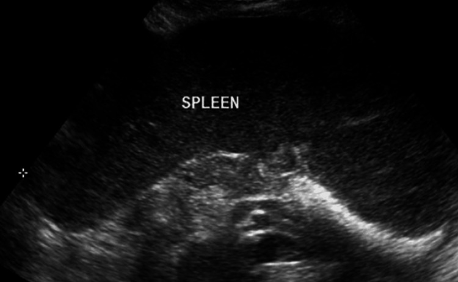
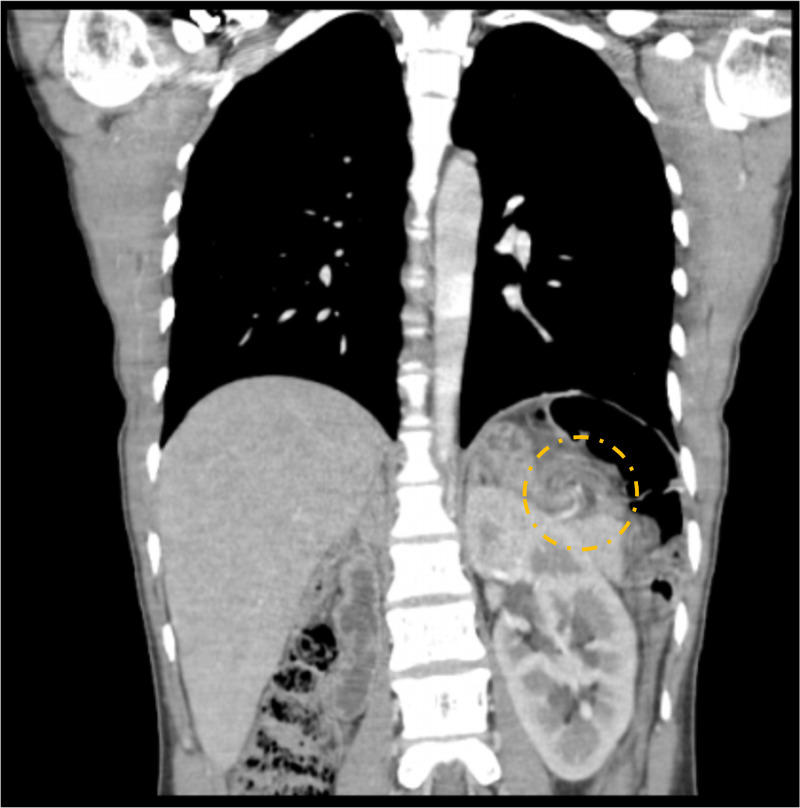

119 — Lách lạc chỗ & xoắn lách: "hố lách trống + khối di động + dấu xoáy" / Wandering spleen & splenic volvulus
Tags: pattern:lach-lac-cho pattern:xoan-cuong pattern:nhoi-mau-tang vung:lach protocol:CT-bung-da-thi protocol:Doppler-sieu-am
Mức chắc chắn (certainty): tổng hợp y văn (literature synthesis) — số liệu lấy nguyên từ 2 ca nguyên văn có ảnh (Cureus 2026, PMC13384039; Cureus 2026, PMC13326857), 1 ca X-quang–CT có ảnh (Radiol Case Rep 2026, PMC13084344), 1 ca nhi 10 tuổi kèm tổng quan y văn (Case Rep Pediatr 2025, PMC12349995) và 2 bài review ca (Am J Case Rep 2020, PMC7483514; Radiol Case Rep 2025, PMC11847500).
Câu hỏi gốc của bài: bệnh nhân đau bụng tái diễn hoặc đau bụng cấp, khám có khối di động; trên siêu âm/CT không thấy lách ở hố lách và có một khối giống lách ở bụng giữa – tiểu khung kèm dấu xoáy (whirl sign) ở cuống mạch. Đây là lách lạc chỗ bị xoắn — và câu quyết định là còn cứu được lách hay không, vì cứu lách (splenopexy) khác hoàn toàn cắt lách (splenectomy) về hệ quả lâu dài. Điểm tựa giải phẫu: lách được giữ trong hố lách bởi 4 dây chằng (vị–lách, lách–thận, lách–đại tràng, lách–hoành). Thiếu/hão các dây chằng này → lách chỉ còn treo trên cuống mạch → di chuyển khắp ổ bụng và xoắn cuống quanh trục dọc.
1. Tổng quan bệnh học – cơ chế hình ảnh
A. Vì sao lách "đi lang thang":
- Bẩm sinh: mô lưng (dorsal mesogastrium) không dung hợp với thành bụng sau trong thời kỳ phôi thai → thiếu dây chằng lách–thận/lách–hoành/lách–đại tràng; ca PMC13084344 mô tả tất cả dây chằng đều mất, chỉ còn dây chằng vị–lách.
- Mắc phải: lách to (lymphoma, sốt rét, bệnh tăng sinh tủy), đa thai/thành bụng nhão, phẫu thuật ổ bụng trước, thay đổi nội tiết (thai kỳ), dị tật cơ hoành.
- Dịch tễ – ngưỡng định lượng nằm lòng:
- Chiếm < 0,2% các ca cắt lách; tỷ lệ mắc ước tính < 0,02%; từ năm 1667 ghi nhận < 600 ca trong y văn (PMC13084344, PMC13384039).
- Phân bố hai đỉnh: trẻ < 10 tuổi chiếm tới 1/3 tổng số ca, tỷ lệ nam:nữ ≈ 1:1; đỉnh thứ hai 20–40 tuổi với 70–80% là nữ, tỷ lệ nữ:nam tới 20:1 (PMC7483514, PMC11847500).
- Vì sao xoắn lại gây nhồi máu — thứ tự mạch máu quyết định hình ảnh:
- Tĩnh mạch lách thành mỏng, áp lực thấp → bị chèn trước → ứ máu, lách to nhanh, phù nhu mô.
- Động mạch lách thành dày, áp lực cao → còn thông lâu hơn → giai đoạn đầu lách vẫn ngấm thuốc nhưng chậm/không đều, tĩnh mạch không đọng thuốc.
- Xoắn kéo dài/hoàn toàn → mất tưới máu toàn bộ → nhồi máu, hoại tử, có thể vỡ.
- Ca PMC13084344 ghi đúng hiện tượng này: thì tĩnh mạch cửa động mạch lách vẫn ngấm (ĐK 2,5 mm) trong khi các tĩnh mạch dẫn lách KHÔNG đọng thuốc, tĩnh mạch lách đoạn trước chỗ xoắn còn cản quang bình thường.
- Hệ quả không chỉ ở lách: cuống xoắn kéo theo đuôi tụy (viêm tụy do xoắn), dạ dày (xoắn dạ dày đồng thời), tĩnh mạch lách (huyết khối → giãn tĩnh mạch dạ dày, xem bài 146).
B. Vì sao hình ảnh trông như vậy (vật lý + giải phẫu):
- "Hố lách trống" là dấu đầu tiên: trên mọi mặt cắt ngang qua vòm hoành – thượng vị không có cấu trúc đậm độ mô mềm hình lách ở vị trí giải phẫu.
- Giảm đậm độ khi nhồi máu: mô hoại tử không còn tưới máu → không có iod trong nhu mô. Định lượng: thì tĩnh mạch cửa, lách 49 HU (24–64 HU) so với gan 92 HU (73–113 HU) (PMC13084344); khi hoại tử hóa lỏng, ổ dịch có thể xuống ~13 HU (bài 146, ca nhồi máu gần toàn bộ).
- Dấu xoáy (whirl/whirlpool sign): trên mặt cắt vuông góc với trục xoắn, các mạch máu và mỡ mạc treo cuống lách cuộn thành hình xoáy ốc — dấu đặc hiệu nhất của xoắn cuống; trên mặt cắt song song trục, mạch máu hiện như "cột tháp sọc" (barber-pole).
- Kích thước: lách lạc chỗ thường to hơn bình thường do ứ máu mạn; ca nguyên văn ghi 16 × 5 cm (PMC13084344) và 24 cm trục dọc, chạm tiểu khung (PMC13384039).
- Mức xoắn: y văn ghi từ 180° đến 1800° (PMC11847500 dẫn ca xoắn 1800°); mức xoắn không tương quan tuyến tính với mức nhồi máu — thời gian xoắn quan trọng hơn.
2. Mẫu hình + chẩn đoán phân biệt theo vị trí (Gamut)
A. "Hố lách trống" (empty splenic fossa) — gamut theo nguyên nhân:
- Lách lạc chỗ (wandering spleen): lách hiện ở bụng giữa/tiểu khung, to, cuống dài, có/không xoắn — chẩn đoán hay bị bỏ sót nhất.
- Đã cắt lách: hỏi tiền sử + tìm mô lách lạc (splenosis) hoặc lách phụ phì đại.
- Tự cắt lách (autosplenectomy) trong hồng cầu hình liềm: lách teo nhỏ, vôi hóa, không phải mất hẳn.
- Đa lách (polysplenia) / dị tạng: nhiều khối lách nhỏ cùng bên phải dạ dày, kèm bất thường gan–tim–mạch.
- Đảo phủ tạng (situs inversus): lách ở phải, gan ở trái — kiểm tra trước khi kết luận "mất lách".
- Bất sản lách bẩm sinh: hiếm, kèm dị tật tim bẩm sinh (hội chứng Ivemark).
B. "Khối vùng chậu/bụng dưới" ở nữ — gamut:
- Lách lạc chỗ: đậm độ/ngấm thuốc giống lách, có cuống mạch kéo lên trên (dấu then chốt).
- Khối phần phụ (u buồng trứng, nang, xoắn buồng trứng): cuống riêng, không nối với trục tĩnh mạch lách–cửa.
- U xơ tử cung sa/nhân xơ: liên tục với tử cung, không có mô lách.
- Khối mạc treo/mạc nối, GIST, lymphoma, nang sán: không có "dấu xoáy" cuống lách, không giải thích hố lách trống.
- Splenosis (mô lách lạc mắc phải sau vỡ lách): nhiều nốt nhỏ, không cuống, ngấm thuốc như lách.
C. "Dấu xoáy" (whirl sign) — không chỉ của lách:
- Xoắn cuống lách, xoắn ruột non/đại tràng, tắc quai kín, xoắn mạc nối, xoắn buồng trứng, xoắn dạ dày — luôn xác định cơ quan nào nuôi bởi mạch trong ổ xoáy và cơ quan nào thiếu tưới máu.
D. Ba câu hỏi lọc trước khi kết luận:
- Lách có ở hố lách không? (nếu không → tìm khối lách lạc, đừng dừng ở "không thấy lách").
- Khối đó có cuống mạch nối với trục lách–cửa không? (có → lách lạc chỗ).
- Có dấu xoáy + giảm/mất ngấm thuốc không? (có → xoắn; mức ngấm quyết định cứu lách hay cắt lách).
3. Bảng so sánh phân biệt (ma trận đối chiếu)
| Thực thể (entity) | Hình ảnh điển hình | Chốt vào (rule-in) | Chốt loại (rule-out) | Gợi ý xác nhận |
|---|---|---|---|---|
| Lách lạc chỗ + xoắn cấp | Hố lách trống; lách to, lệch vị trí, cuống dài; dấu xoáy; ngấm thuốc giảm/không đều | Hố lách trống + khối giống lách + dấu xoáy + cuống nối trục lách–cửa | Lách vẫn ở hố lách → không phải lách lạc chỗ (nghĩ nhồi máu do thuyên tắc, bài 146) | CT bụng–chậu có cản quang 2 thì + MPR; Doppler |
| Xoắn TỪNG LÚC (intermittent torsion) | Cơn đau tái diễn; giữa các cơn CT có thể bình thường; lách lạc chỗ, cuống dài, tĩnh mạch giãn | Đau từng cơn + lách lạc chỗ + đổi hướng cuống giữa 2 lần chụp | Không thấy lách lạc chỗ → tìm nguyên nhân đau khác | Chụp trong cơn đau; MRI/CT lặp lại; theo dõi |
| Splenosis | Nhiều nốt nhỏ mô lách rải rác phúc mạc, không cuống, ngấm như lách | Tiền sử vỡ/cắt lách + nhiều nốt ngấm như lách | Một khối lớn có cuống mạch → lách lạc chỗ | Tc-99m HDRBC nếu cần; không sinh thiết |
| Đa lách / lách phụ | Nhiều khối lách cùng bên, kích thước nhỏ–vừa, vị trí cố định | Nhiều khối + bất thường gan/tim/mạch (dị tạng) | Một lách to + di động → lách lạc chỗ | CT có cản quang; siêu âm |
| Khối phần phụ / xoắn buồng trứng | Khối tiểu khung, cuống buồng trứng, có nang/dịch; lách vẫn ở hố lách | Lách bình thường ở hố lách + khối phần phụ | Dấu xoáy cuống lách + hố lách trống | Siêu âm đầu dò âm đạo; MRI |
| Xoắn dạ dày / thoát vị hoành | Dạ dày giãn, mức khí–dịch, "dạ dày lộn ngược"; có thể kèm lách lạc chỗ | Dạ dày giãn + mất liên tục cơ hoành | Dạ dày bình thường → không phải | X-quang bụng; CT; luôn tìm lách lạc chỗ khi có xoắn dạ dày |
| Nhồi máu lách do thuyên tắc | Lách đúng vị trí, ổ giảm đậm độ hình nêm đáy ở vỏ, nhiều ổ nếu thuyên tắc | Lách tại chỗ + ổ nêm + nguồn thuyên tắc (rung nhĩ, van tim) | Lách lạc chỗ + dấu xoáy | CT 3 thì; siêu âm tim; xem bài 146 |
| Chấn thương lách / vỡ lách | Máu quanh lách, vỡ bao, máu đông tăng đậm độ, tụ máu dưới bao | Tiền sử chấn thương + dịch máu 35–70 HU quanh lách | Không chấn thương + cuống xoắn | CT có cản quang thì tĩnh mạch; xem bài 140 |

Trái: CT 4 tầng cắt — lách không ở hố lách, nằm thấp trong bụng, to 24 cm chạm tiểu khung, ngấm thuốc kém, dấu xoáy (vòng vàng) ở cuống mạch. Phải: CT thì tĩnh mạch cửa — lách lạc chỗ trong tiểu khung, ổ giảm đậm độ hình nang ở cực trên (mũi tên) = ổ nhồi máu. Cùng hình thái lách lạc chỗ, khác mức độ thiếu máu. Nguồn: Cureus 2026, PMC13384039 Fig. 2 và PMC13326857 Fig. 2, CC BY 4.0; ảnh ghép letterbox.Đọc chuẩn xác: "còn cứu được" hay "đã nhồi máu"
- Còn cứu (viable): lách còn ngấm thuốc (dù không đều), không có ổ giảm đậm độ rõ, không khí trong nhu mô, bệnh nhân đau từng cơn → mục tiêu detorsion + splenopexy.
- Không cứu (non-viable/infarcted): không ngấm thuốc toàn bộ, ổ hoại tử/dịch hóa, khí trong nhu mô, đau liên tục nhiều ngày → cắt lách, vì gỡ xoắn trên lách hoại tử có nguy cơ giải phóng cytokin, tăng K⁺, huyết khối và vỡ muộn (PMC12349995).
- Đo được — nên đo: kích thước lách 3 chiều, HU lách/HU gan thì tĩnh mạch cửa, số vòng xoắn/độ xoắn, chiều dài cuống, tình trạng tĩnh mạch lách (có huyết khối?), đuôi tụy, dạ dày.
4. Protocol chụp + tiêu chuẩn cứu lách
Protocol hình ảnh:
- Siêu âm bụng + Doppler màu đầu tay (trẻ em, thai phụ, cấp cứu): xác nhận hố lách trống + khối lách lạc chỗ; Doppler đánh giá dòng chảy cuống — nhưng hạn chế bởi hơi/béo/đau, và ca PMC13326857 ghi nhận dòng thay đổi, giảm từng lúc, không loại trừ xoắn.
- CT bụng–chậu có cản quang, 2 thì (động mạch 25–35 giây, tĩnh mạch cửa 60–70 giây), lát 1–2 mm, dựng MPR coronal/sagittal dọc cuống lách — đây là chuẩn chẩn đoán (hố lách trống, vị trí lách, dấu xoáy, mức ngấm thuốc).
- Đo và ghi: HU lách/HU gan, kích thước, dấu xoáy, tĩnh mạch lách, đuôi tụy, dạ dày, dịch ổ bụng.
- Chụp lặp lại trong cơn đau nếu lần đầu bình thường mà vẫn nghi xoắn từng lúc.
- Không cần thuốc cản quang đường uống; không chọc hút/sinh thiết khối nghi lách lạc chỗ (nguy cơ chảy máu, gieo rắc nếu nhầm ung thư).
Tiêu chuẩn quyết định (theo mức sống của lách):
| Tình huống | Bằng chứng hình ảnh | Xử trí |
|---|---|---|
| Lách lạc chỗ không xoắn, không triệu chứng | Lách di động, ngấm thuốc bình thường | Splenopexy chương trình (nếu nguy cơ xoắn cao: cuống dài, nữ tuổi sinh sản, thai kỳ) hoặc theo dõi chọn lọc |
| Xoắn từng lúc, lách còn sống | Cơn đau + dấu xoáy khi đau, ngấm thuốc còn | Detorsion + splenopexy (nội soi được) |
| Xoắn hoàn toàn, lách còn ngấm thuốc | Xoáy cuống, tĩnh mạch không đọng, nhu mô còn ngấm | Detorsion + splenopexy trong thời gian ngắn; theo dõi |
| Nhồi máu / hoại tử | Không ngấm thuốc, ổ dịch hóa, khí trong nhu mô | Splenectomy + vaccine phế cầu/não mô cầu/Hib, kháng sinh dự phòng, tư vấn suốt đời |
| Vỡ lách / chảy máu | Máu ổ bụng 35–70 HU, tụt HA | Mổ cấp cứu |
flowchart TD
A[Đau bụng hoặc khối di động<br/>nghi lách lạc chỗ] --> B[Siêu âm bụng và Doppler<br/>tìm lách ở hố lách]
B --> C{Lách có ở hố lách?}
C -->|Có| D[Xét nguyên nhân khác:<br/>nhồi máu do thuyên tắc, khối phần phụ]
C -->|Không| E[CT bụng chậu có cản quang 2 thì<br/>dựng MPR dọc cuống lách]
E --> F{Có dấu xoáy<br/>ở cuống lách?}
F -->|Không| G[Lách lạc chỗ không xoắn<br/>cân nhắc splenopexy chương trình]
F -->|Có| H{Lách còn ngấm thuốc?}
H -->|Còn ngấm| I[Detorsion và splenopexy<br/>theo dõi tưới máu lại]
H -->|Không ngấm<br/>hoặc ổ hoại tử| J[Splenectomy<br/>vaccine và dự phòng OPSI]
I --> K[Siêu âm hoặc CT kiểm tra<br/>và theo dõi tái xoắn]
J --> L[Tư vấn suốt đời:<br/>sốt cao phải khám ngay]
5. Biến thể bình thường và cạm bẫy
- "Không thấy lách" ≠ "đã cắt lách": luôn quét toàn bộ bụng–chậu trước khi kết luận; lách lạc chỗ hay nằm sát bàng quang/tử cung, dễ bị đọc thành khối phần phụ.
- Xoắn từng lúc — phim giữa cơn có thể bình thường: ca PMC13326857 có nhiều đợt đau, giữa các đợt hình ảnh không điển hình; nếu chỉ chụp lúc hết đau sẽ âm tính giả. Cách xử lý: chụp trong cơn, hoặc ghi nhận cuống dài + lách di động để đặt chỉ định splenopexy.
- Siêu âm không loại trừ: Doppler giảm dòng từng lúc do tư thế/đau/hơi; báo cáo phải nêu rõ hạn chế kỹ thuật, không ghi "không xoắn".
- Dấu xoáy không đặc hiệu cho lách: phải chỉ ra mạch nào nằm trong ổ xoáy; xoắn dạ dày/đại tràng/quai kín có dấu xoáy tương tự (bài 160, 162).
- Lách lạc chỗ + xoắn dạ dày cùng lúc: do cùng cơ chế hão dây chằng; đừng bỏ sót dạ dày giãn/mức khí–dịch sau khi đã "giải thích xong" bằng lách.
- Viêm tụy do xoắn đuôi tụy: lipase tăng có thể bị quy cho "viêm tụy tự phát"; trên CT tìm đuôi tụy xoắn theo cuống.
- Thai kỳ: lách lạc chỗ thường biểu hiện lần đầu khi mang thai do giãn dây chằng + tử cung to; chẩn đoán bằng siêu âm/MRI (tránh xạ), mổ nội soi tam cá nguyệt 2 nếu cần.
- Nhầm "u tiểu khung" và mổ oan: có ca lách lạc chỗ bị chẩn đoán là khối tử cung/phần phụ trước mổ; dấu phân biệt là hố lách trống + cuống mạch.
- Sau cắt lách: nguy cơ nhiễm trùng tối cấp sau cắt lách (OPSI) suốt đời — phải ghi vào báo cáo/đơn chuyển tiếp, tiêm vaccine và hướng dẫn sốt là cấp cứu.
6. Tự lượng giá — Blind Quiz
Ca 1 — Nữ 16 tuổi, đau bụng tăng dần 5 ngày, sốt 38 °C, bạch cầu 18.200/µL. CT bụng–chậu có cản quang (4 tầng cắt từ trên xuống dưới):

- Câu hỏi: (1) Lách nằm ở đâu, kích thước? (2) Dấu trong vòng tròn vàng là gì, nghĩa là gì? (3) Còn cứu lách được không, xử trí?
Bấm để hiện đáp án (findings + chẩn đoán)
- Dấu hiệu: hố lách trống (A); lách nằm thấp ở bụng trái/bụng giữa (B), rồi xuống tiểu khung (C, D) với trục dọc ~24 cm; nhu mô ngấm thuốc kém; dấu xoáy (vòng vàng, B) của cuống mạch lách.
- Chẩn đoán: lách lạc chỗ bị xoắn cuống lách (splenic torsion) — dấu xoáy + hố lách trống + lách to giảm ngấm là bộ ba chốt.
- Xử trí: lách không còn khả năng sống → cắt lách; ca gốc hậu phẫu thuận lợi. Bài học: khối "tiểu khung" ở nữ trẻ có thể là lách, đừng mổ như khối phần phụ trước khi xem hố lách.
- Nguồn ảnh: Bani Abdel-Rahman GM, Halasah LH. Cureus 2026;18(6):e111195, PMC13384039, Fig. 2, CC BY 4.0.
Ca 2 — Người trẻ, đau bụng trái tái diễn nhiều tháng, mỗi cơn tự hết; giữa các cơn xét nghiệm gần bình thường. Siêu âm bụng dưới:

- Câu hỏi: (1) Vì sao siêu âm hố lách trống mà vẫn thấy "lách"? (2) Cần chụp gì tiếp và tìm dấu nào? (3) Vì sao không cắt lách ở ca này?
Bấm để hiện đáp án
- Dấu hiệu: siêu âm không thấy lách ở hố lách trái, thay vào đó là khối mô đều, âm vang giống lách ở bụng dưới/tiểu khung — hình dưới ghi rõ "SPLEEN".
- Bước tiếp: CT bụng–chậu có cản quang → lách lạc chỗ trong tiểu khung, cuống dài, dấu xoáy khi có cơn, tĩnh mạch ứ nhưng động mạch còn thông = xoắn từng lúc.
- Vì sao không cắt lách: lách còn sống, cơn đau hồi phục giữa các đợt → mục tiêu là giữ lách: detorsion + splenopexy; cắt lách chỉ khi nhồi máu/hoại tử.
- Nguồn ảnh: Altaif Z, Altaif M. Cureus 2026;18(6):e110126, PMC13326857, Fig. 1, CC BY 4.0.
Ca 3 — Nữ 27 tuổi, đau hạ sườn trái lan vai trái 5 ngày, CRP 121 mg/L, LDH 626 U/L. CT thì tĩnh mạch cửa, mặt cắt coronal:

- Câu hỏi: (1) Cấu trúc trong vòng đứt nét? (2) Vì sao lách giảm đậm độ? (3) Dấu nào cho biết tĩnh mạch bị chèn trước động mạch?
Bấm để hiện đáp án
- Dấu hiệu: "whirlpool" của cuống lách xoắn theo chiều kim đồng hồ (vòng đứt nét vàng); lách 16 × 5 cm, đậm độ trung bình 49 HU (24–64) so với gan 92 HU (73–113).
- Vì sao giảm đậm độ: nhu mô mất tưới máu do xoắn → không có iod trong mô; giảm đậm độ lan tỏa là dấu nhồi máu.
- Tĩnh mạch bị chèn trước: động mạch lách vẫn ngấm (ĐK 2,5 mm) nhưng các tĩnh mạch dẫn lách không đọng thuốc; tĩnh mạch lách đoạn gần chỗ xoắn vẫn cản quang — đúng sinh lý "tắc tĩnh mạch trước, tắc động mạch sau".
- Xử trí ca gốc: mở bụng xác nhận xoắn + nhồi máu → cắt lách, hậu phẫu thuận lợi, ra viện ngày 5.
- Nguồn ảnh: Alfakhry A, Ghosen A, Hariri AA. Radiol Case Rep 2026;21(6):2643–2647, PMC13084344, Fig. 3, CC BY-NC-ND 4.0 (nguyên bản, không chỉnh sửa). Số liệu HU và kích thước lấy từ cùng bài.
Phản biện (critique): cả ba ca đều là báo cáo ca đơn lẻ, không có đoàn hệ; tỷ lệ "70–80% nữ 20–40 tuổi" và "nam:nữ 1:1 ở trẻ" đến từ tổng quan y văn (PMC7483514, PMC11847500) chứ không từ dữ liệu tiến cứu. Ngưỡng 49 HU là của một ca — dùng để minh họa hướng thay đổi, không phải cut-off chẩn đoán; bối cảnh (hố lách trống + dấu xoáy + mất ngấm) mới là chốt. Chỉ định splenopexy dựa trên mức sống của lách và nguyện vọng/nguy cơ của bệnh nhân, không có thử nghiệm ngẫu nhiên so sánh với cắt lách.
Bài liên quan chéo
- 100 – Tổng quan hệ Bụng
- 110 – Giải phẫu bụng cắt lớp
- 140 – Lách & chấn thương tạng
- 146 – Huyết khối tĩnh mạch lách & nhồi máu lách (nhồi máu do thuyên tắc, tăng áp cửa bên trái)
- 149 – Tăng áp cửa không do xơ gan
- 160 – Bụng cấp GI (dấu xoáy, tắc quai kín)
- 162 – Tắc ruột & mạc treo
- 181 – BRTO cho giãn tĩnh mạch dạ dày
Không dùng để chẩn đoán độc lập khi chưa có người hướng dẫn.